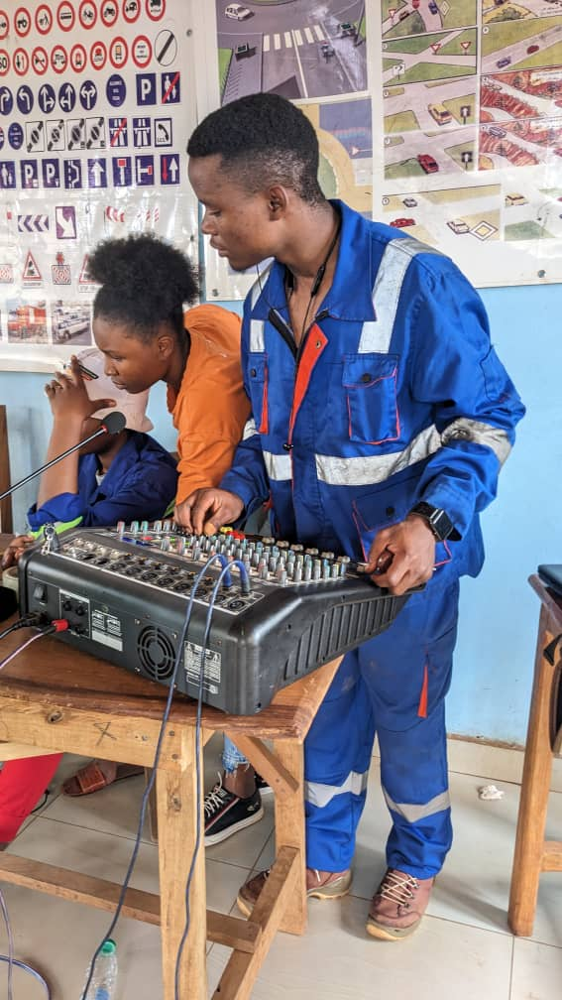
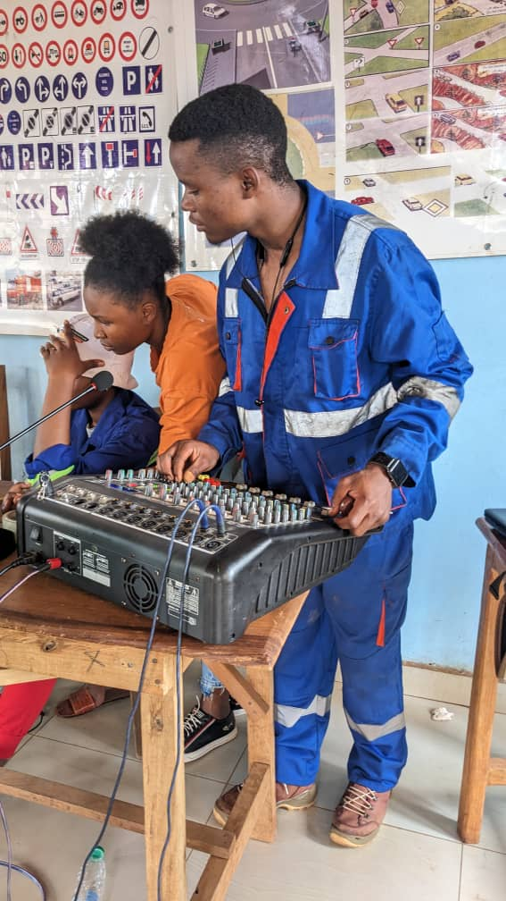

Lundi 18 mars 2024
C’était ce lundi 18 mars 2024 sur le campus de Banekane. La délégation conduite par le représentant –Pays USAID a effectué une visite de travail à l’Université des Montagnes. Après la présentation de l’UdM et des responsables par Mme La Présidente (le Pr Jeanne NGOGANG), les échanges ont portés sur le projet AFROHUN soutenu par l’USAID (Présenté par le Pr Chuisseu). Ensuite, le représentant des étudiants a fait le compte rendu sur activités menées et les formations reçues. Le Séjour de la délégation s’est achevé par une visite guidée du Campus de Banekane et des Cliniques Universitaires des Montagnes.
Etaient présents dans la délégation :

Samedi 13 avril 2024
La seconde édition des *Journées du Savoir-Faire Udmois (JSFU)* organisée par la *Mutuelle des Etudiants de l'UdM (ME-UdM)* a réunies 3 Clubs : l'AEGBM, le Club Informatique et le Google Studends Club. C'est en tout plus d'une centaine de participants qui ont profité des diverses prestatations offertes à l'occasion. C'est sur une note de satisfaction que le rendez à été pris pour la 3e édition des JSFU qui se dérouleront le *samedi 13 avril 2024* en partenariat avec l'entenne se Bangangté de *Activ Spaces*. PS : *ON RECONNAIT UN ARBRE A SES FRUITS*
Les prestatations etaient les suivantes :
 

jeudi 11 avril 2024.
Une Délégation des élèves de classe de Terminale du collège catholique Teerenstra de Bertoua a effectuée une visite à l'Université des Montagnes. C'était ce jeudi 11 avril 2024. Dans le cadre de cette immersion, les apprenants ont touché du doigt les réalités de la vie universitaire d'une part, et la qualité des laboratoires, infrastructures de l'université des Montagnes.

Vendredi 09 février 2024
Séminaire animé par M. Eric NTONFO, Entrepreneur et fondateur de FIATOPE. Il était question de partager avec les étudiants les expériences sur l'entreprenariat et la création d'entreprise, l'environnement des affaires, les conseils pratiques. Il ressort que le premier capital pour entreprendre n'est pas le capital financier, mais le capital humain. Les grandes entreprises telles que facebook ont été conçues dans les universités par des groupes d'étudiants et d'amis. Il ne faut donc pas cultiver l'individualisme, mais se mettre ensemble pour entreprendre. D'autres questions ont été abordées comme les freins à l'entreprenariat en Afrique : l'absence d'infrastructures, absence d'Internet, électricité, etc. Pour Le Pr Jeanne NGOGANG, Présidente de l'UdM, les étudiants doivent : rêver, oser, réaliser. Ne pas avoir peur de l'échec, car la peur de l'échec empêche d'entreprendre. En cas d'échec, examiner les causes et se relancer.
Vendredi 02 février 2024
La cérémonie présidée par le Pr Jeanne Ngogang aura été l'occasion pour toute la communauté universitaire des Montagnes de prendre l'engagement commun de tout mettre en œuvre pour redonner à l'UdM ses lettres de noblesse. *L'université famille* Dans son mot de bienvenue aux nouveaux étudiants, Mme la Présidente a insisté sur le concept *"d'université famille"*. Et comme l'avait dit le penseur Antonio Oliveira Salazar : *"quand la famille se defait, la maison tombe en ruine"* Il s'agit aujourd'hui plus que jamais pour chacun de nous de s'approprier le projet UdM afin qu'ensemble nous puissions relever les défis auxquels l'institution fera face. De la Présidente au technicien de surface, de l'enseignement à l'apprenant, nous devons tous avoir à cœur le gigantisme de l'héritage à nous légué par les pères fondateurs. Chacun à son niveau ne doit donc lésiner sur aucun moyen pour non seulement accompagner ces nouveaux venus à intégrer valablement la communauté universitaire, mais aussi hisser ce fleuron du paysage universitaire qu'est l'UdM au firmament de la formation au Cameroun et au-delà. Très courue, cette cérémonie couplée à l'Assemblée générale de la mutuelle des étudiants a permis de primer des étudiants leaders. Bon à savoir: les présences du Pr Fogue Médard, Vice Président de l'UdM et Doyen de la Faculté des Sciences et de Technologie, du Pr Charles Pilipili, Doyen de la Faculté des Sciences et de la Santé, du Pr Eugène Jamot Ndebia, Directeur des Affaires Académique et de la Coopération, ainsi que celle des illustres membres de l'AED, Dr David Tchiomajio et le Maire Thomas Tchatchouang, sans oublier de nombreux responsables en leurs grades et fonctions respectifs, ces présences auront permis de mesurer la place et l'importance que le top management accorde à la vie et à l'avenir de l'UdM. En somme, la réussite de cette cérémonie aura été comme la fleur qui annonce une belle moisson.